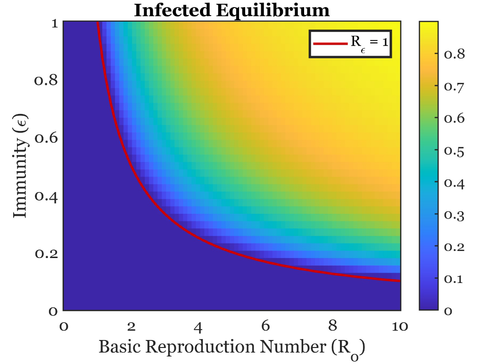

How does stochastic switching scale up?
Connecting stochastic biochemical or gene-regulatory dynamics to phenotypic heterogeneity at the population level.
RESEARCH
I use tools from dynamical systems, differential equations, probability, and computation to study biological processes across scales.
MATHEMATICAL EPIDEMIOLOGY
My first research project began in the 2023 UCF Applied and Computational Mathematics REU with Prof. Zhisheng Shuai. I studied compartmental epidemic models, focusing on how post-infection mortality and partial immunity alter long-term disease behavior.
This work developed into my honors undergraduate thesis, A Mathematical Modeling Approach to Investigate the Impacts of Post-Infection Mortality and Partial Immunity on Disease Endemicity. The project combined equilibrium and stability analysis with questions about reinfection and disease persistence.
More broadly, I am interested in incidence functions, multistrain systems, vaccination, ecological interactions among pathogens, and rigorous global analysis of epidemiological models.

MICROBIAL POPULATION DYNAMICS
During the 2024 Georgia Tech Mathematics REU, I worked with Profs. Rachel Kuske and Sam Brown on mathematical models of bacterial population growth and communication, with an emphasis on quorum sensing in Pseudomonas aeruginosa.
A central question is how cell-to-cell variability and switching behavior can produce heterogeneous or bimodal population-level responses. This naturally connects deterministic population models with stochastic descriptions of individual-level behavior.

CURRENT
Connecting stochastic biochemical or gene-regulatory dynamics to phenotypic heterogeneity at the population level.
Linking microbial ecology, competition, communication, and evolution to within-host and epidemiological dynamics.
Using stability theory, Lyapunov methods, nondimensionalization, and carefully chosen model structure to understand nonlinear biological systems.